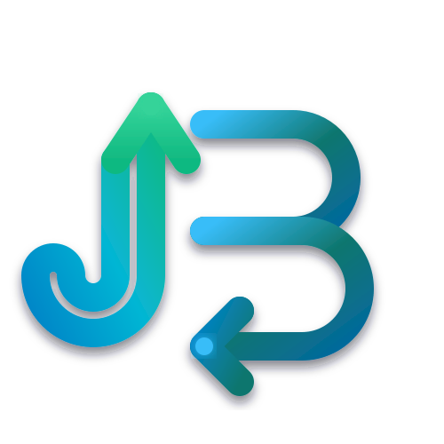
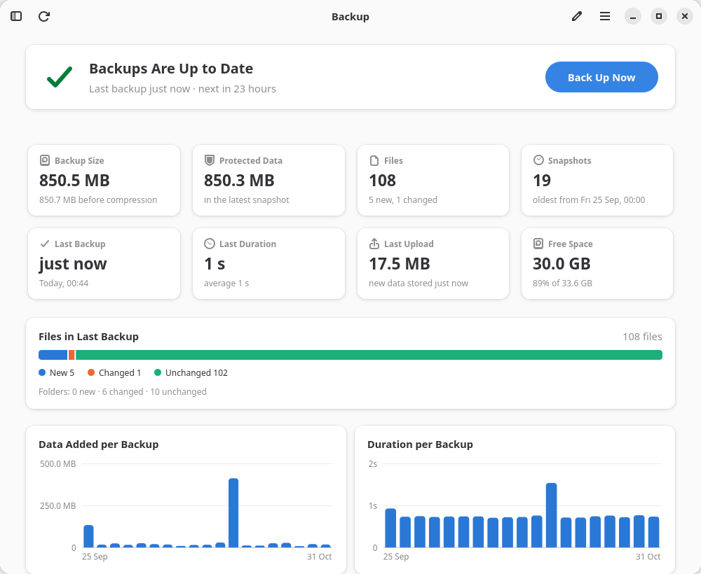
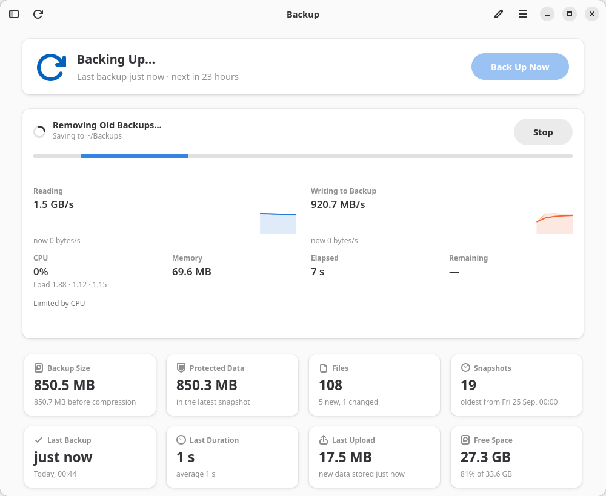
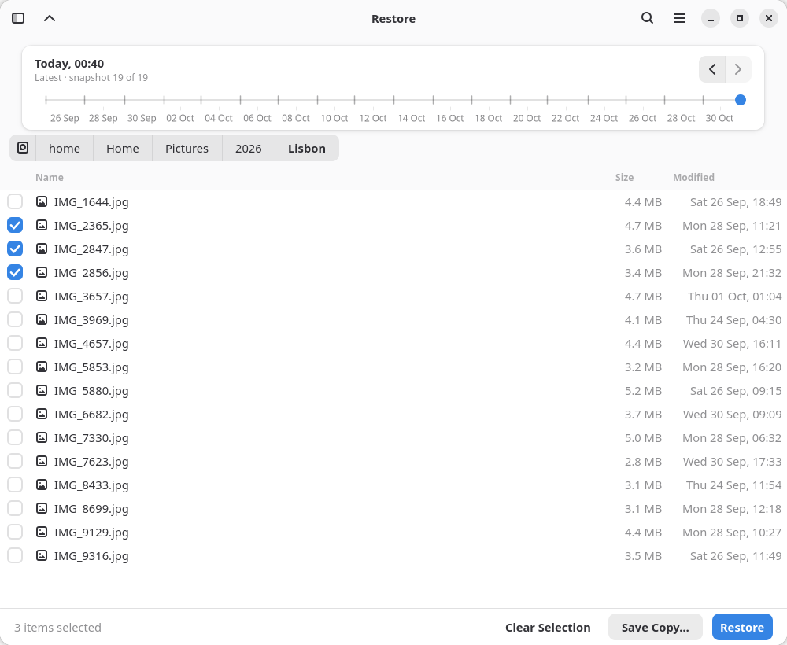
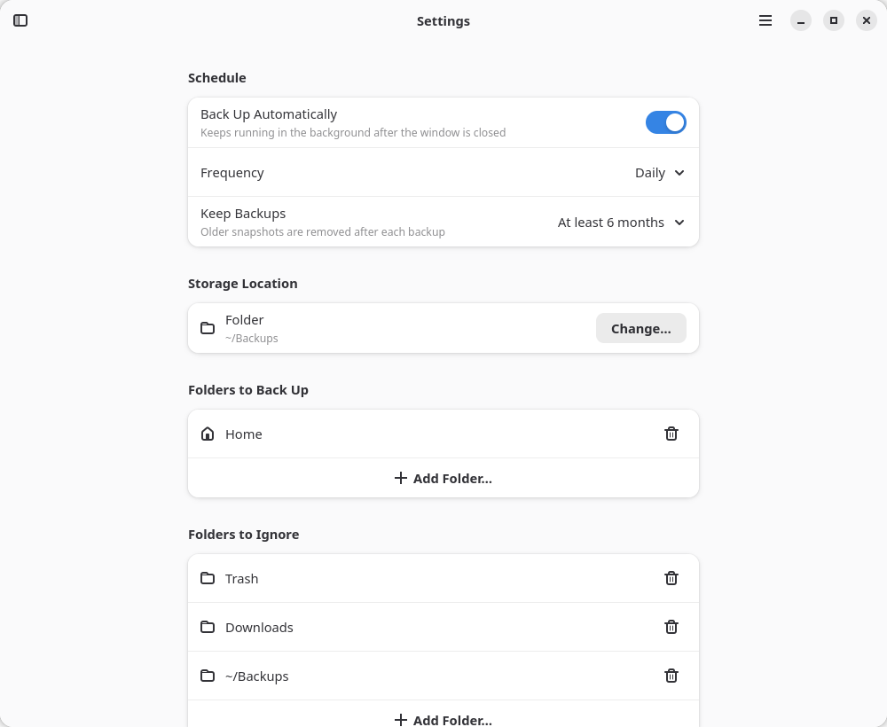
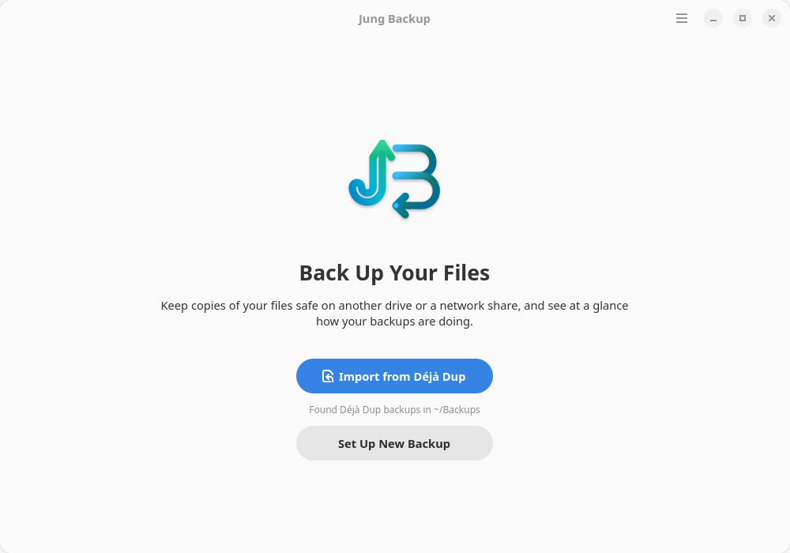

Open Source · GNOMEJung Backup
Back up your files and see how your backups are doing
A backup app built around a dashboard: how big the backup is, how old it is, how long the last run took, how many files changed, and live throughput, CPU and memory use while a backup runs.
Latest build for x86_64 · also for ARM (aarch64)
Dashboard First
Size, age, duration and changed files at a glance, with charts and a snapshot history. Restore and settings stay out of the way until you need them.
Déjà Dup Compatible
Import Déjà Dup's settings on first start. Both apps use the same restic snapshots, so either one can restore or prune the other's backups.
Back Up Anywhere
Local disks, USB drives, network shares, SFTP servers, Google Drive or any rclone remote. Encrypted and deduplicated by restic.




